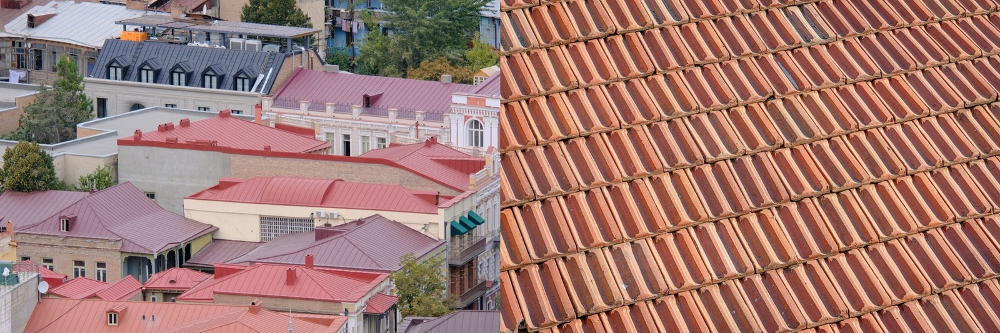

Metal Roof vs Tile Roof
The two best tropical roofs, head to head — lightweight, storm-ready metal versus heavy, century-lasting tile. Both excellent; the winner depends on weight, budget, and the look you want.

Unlike metal-vs-shingles, this is a fight between two genuinely great tropical roofs. Standing-seam metal is light, storm-ready, and reflective; clay and concrete tile is heavy, gorgeous, and can last a century. Neither is a mistake — the right answer turns on your structure, budget, and the look you're after.
The quick verdict
Both are excellent. Choose metal for the lightest, most storm-proof, lowest-maintenance roof, especially on a simpler structure. Choose tile for the longest life, a cooler ventilated roof, and a timeless colonial look — provided the structure is engineered for the weight.The head-to-head
| Factor | Metal roof | Tile roof |
|---|---|---|
| Upfront cost | 🟡 ~$80–160/m² | 🟡 ~$60–180/m² (clay higher) |
| Lifespan | 🟢 40–70 years | 🟢 50–100 years |
| Weight | 🟢 Light — easy on structure | 🔴 Heavy — structure must be engineered |
| Heat / cooling | 🟢 Reflective finish | 🟢 Ventilated air gap keeps it cool |
| Hurricane / wind | 🟢 Excellent when anchored | 🟡 Excellent if clipped; loose tiles fly |
| Maintenance | 🟢 Minimal | 🟢 Minimal (tiles inert) |
| Look | 🟡 Modern / agricultural | 🟢 Classic colonial / Mediterranean |
| Repairs | 🟢 Panel replacement | 🟡 Individual tiles replaceable |
How they actually differ
The deciding variable is often weight. A tile roof can weigh several times what a metal roof does, so it must be planned for from the foundation up — retrofitting tile onto a structure built for metal isn't simple. Metal's lightness makes it flexible and cheap to support; tile's mass buys you a cooler, quieter, century-lasting roof but commits the whole structure. On cost they overlap, with clay tile at the top and metal and concrete tile in the middle.
Which should you choose?
- Choose metal for the lightest, most hurricane-proof roof, a modern look, simpler structures, or coastal sites (with aluminum/coatings).
- Choose tile for maximum lifespan, the coolest passive performance, and a colonial/Mediterranean aesthetic — when the structure is designed for the load.
- Concrete tile is the value middle path: most of tile's benefits at a lower price than clay.
…in the tropics specifically
Both belong in the tropics — they're the two roofs SORA reaches for first. Tile's ventilated air gap makes it one of the coolest-running roofs in intense sun, and its inert tiles shrug off humidity. Metal's reflectivity and unbeatable wind performance make it the safer default on exposed or hurricane-prone sites, and on coastal lots where you'll specify aluminum or premium coatings against salt. You rarely go wrong with either; you match them to the building and the site.
Not sure which is right for your build?
SORA is a fixed-price design-build platform for foreign buyers in Panama and Costa Rica. We spec the material and method that actually fit your site, climate, and budget — and tell you straight when the cheaper option is the smarter one.
See real 2026 build costs →Frequently asked questions
Is a metal roof or tile roof better for a hot climate?
Both are excellent in heat. Tile creates a ventilated air gap that passively keeps the roof and interior cool, while metal with a reflective finish bounces solar heat away. Tile edges it on passive cooling; metal edges it on weight and storm resistance.
Which lasts longer, metal or tile?
Tile, marginally — clay and concrete tile can last 50–100 years, while metal lasts 40–70. Both are long-life roofs you'd typically only buy once for a home, unlike asphalt shingles.
Why does tile roof weight matter?
A tile roof can weigh several times more than a metal roof, so the building's structure and foundation must be engineered to carry it from the start. That's why you decide on tile early — you can't simply swap a light-roof structure over to tile later without reinforcement.
Sources & verification
Figures in this guide were checked against primary and authoritative sources on 27 July 2026. Immigration, tax, and cost figures change — always confirm the current rules with the official body or a licensed professional before acting.
- Bob Vila — clay vs concrete tile & roofing types
- Forbes Home — tile & metal roof cost